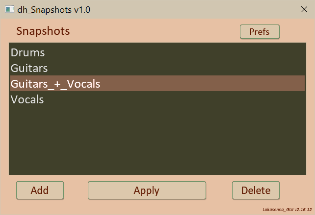
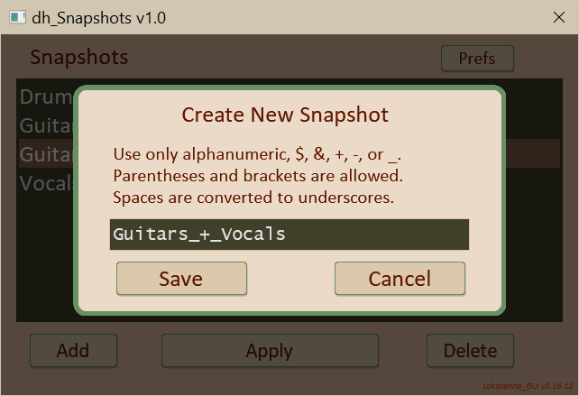
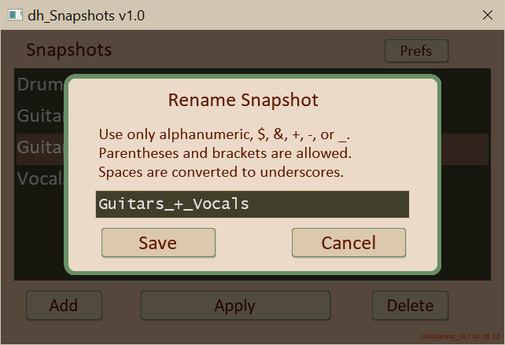
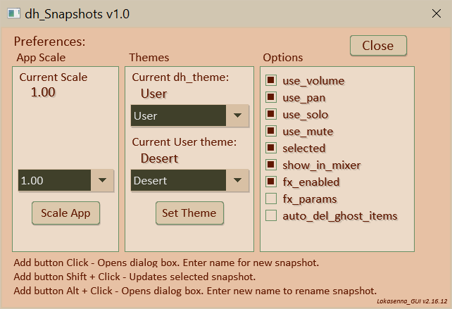

This script is used to store "snapshots" of the Mixer Control Panel state. It saves and restores individual track visibility (in the Mixer Control Panel), which tracks are selected, and individual track solo, mute, pan, and volume settings. It can also save fx enabled states. Which settings are affected can be set in the "Preferences" window. It does not affect any track routing, or phasing. The script window contains a listbox with all the mixer control panel snapshots created with this script. Changing project tabs updates the script with the current project data.

Click on an item to select it then click on the “Apply” button to apply it.
To create a new snapshot click on the “Add” button. This opens the "Create New Snapshot" dialog box (more on this later).
To rename a snapshot Alt+click on the “Add” button. This opens the "Rename Snapshot" dialog box.
Clicking the “Delete” button will delete the currently selected snapshot. You will be prompted to confirm the deletion.
Clicking the “Prefs” button will open the "Preferences" window .
Note: A snapshot is a list of reaper tracks and their states. It is highly likely that tracks are added or removed between, or even during script usage. Tracks that are no longer available I consider to be “ghost” tracks. When applying a snapshot and it encounters a ghost track, the script will prompt you if you want to remove the track reference from the snapshot. Click “Yes” to remove the reference. (This will not affect the project as the track has already been removed.) There is also an option in Preferences to automatically remove them.
Clicking on the “Add” button opens the “Create New Snapshot” dialog box. It has a textbox where you enter the name that you want for the new snapshot. It is initially populated with the name of the last selected snapshot. Enter or modify the name as you desire then click the “Save” button to save it. If the name already exists you will be prompted if you want to overwrite the existing snapshot.

Alt+Click on the “Add” button opens the “Rename Snapshot” dialog box. It has a textbox where you enter the new name that you desire. It is initially populated with the name of the last selected snapshot. Enter or modify the name as you desire then click the “Save” button to save it. If the name already exists a message box will warn you. You cannot rename to an existing name in the list.

Clicking the “Prefs” button will open the "Preferences" window.

Displays the current App scale. Use the menubox to select a scale setting. Click the "Scale App" button to set the scale.
Displays the current theme. Use the menubox to select a theme. If "User" theme is selected it displays the current selected user theme, and a menubox to select a user theme. Use the "Set Theme" button to set the theme. (Setting a theme will replace any theme currently being edited.)
Displays the snapshot options. The first six options are always saved when adding a snapshot. If an option is checked that option will be restored when applying the snapshot (by clicking the “Apply” button). By unchecking the boxes you can disable if those states are updated.
The fx_enabled option, if checked, will save the enabled states of all the tracks fx when adding a new snapshot. If this option is checked when applying a snapshot, and the enabled states were saved, then they will be applied when clicking the "Apply" button.
If the fx_params option if checked, and the fx_enabled option is checked, then all parameters of each enabled fx will be saved when adding a new snapshot. If this option is checked when applying a snapshot, and the enabled states were saved, and the parameters were saved, then they will be applied when clicking the "Apply" button. This options can result in large file size (I haven't tested performance) and should probably remained unchecked except for limited instances.
The auto_del_ghost_items option: It's possible that a reaper track has been deleted, but the snapshot still holds a reference to it. I call these "ghost tracks". They are harmless, but there is no need to have them around. If this box is unchecked you will be prompted to remove them when applying a snapshot. If this option is checked then the reference will be removed automatically.
Click the “Close” button to return to the main script.